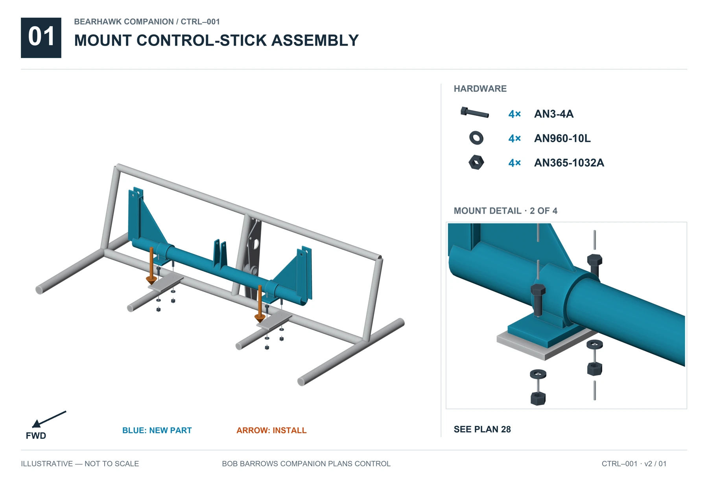
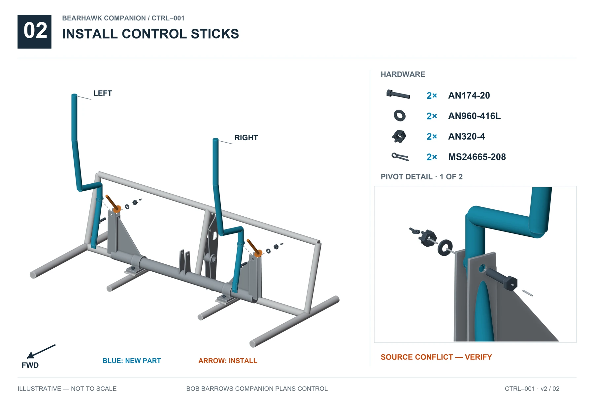
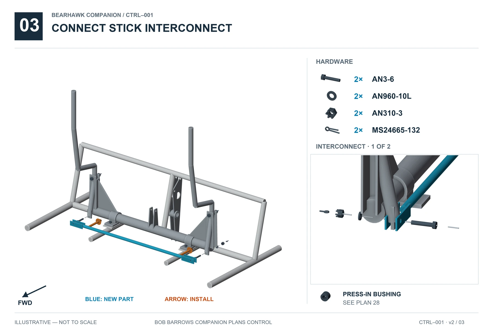
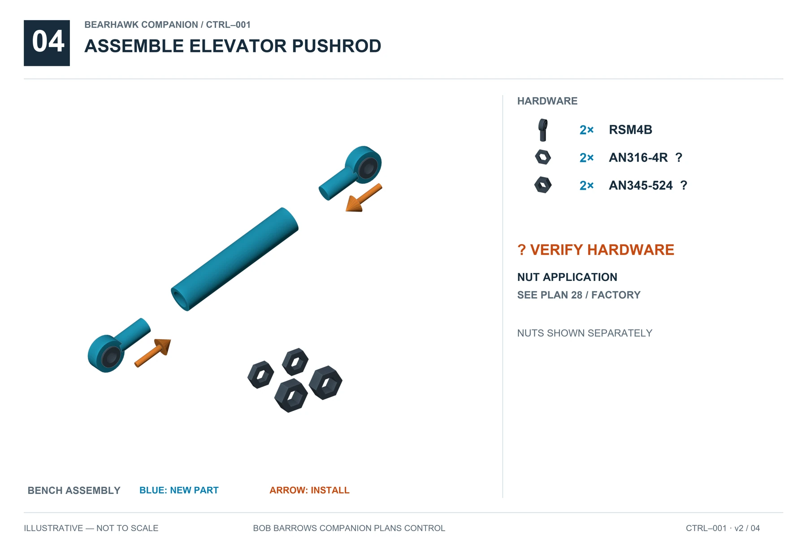
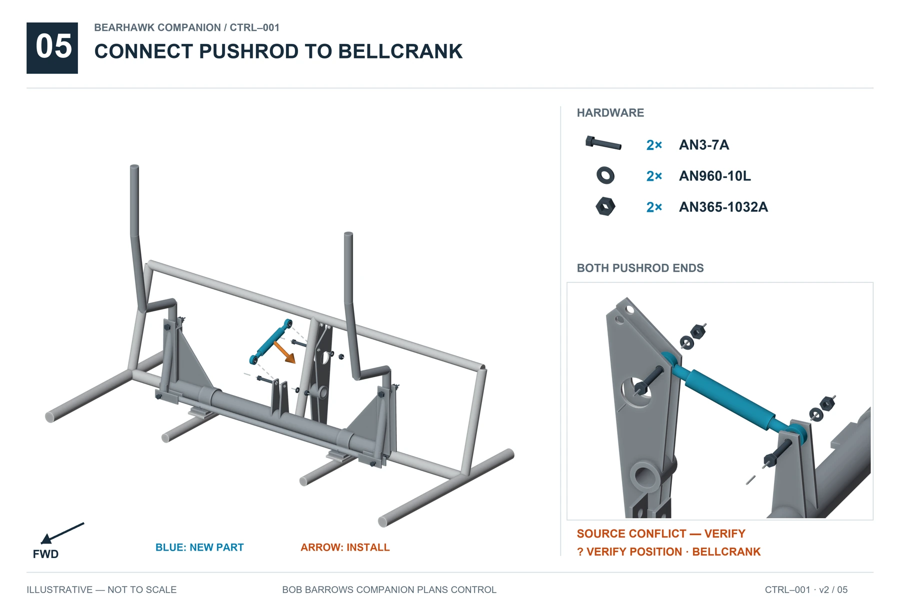
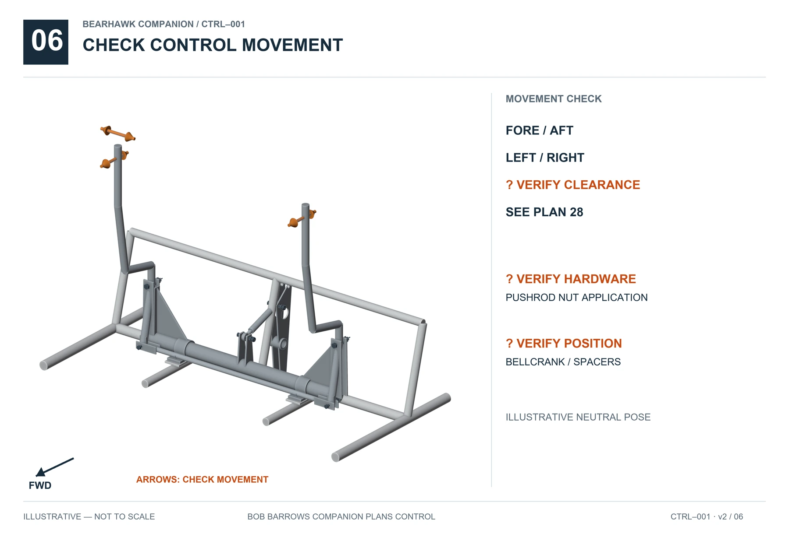

01 · CONTROLS · CTRL001 · v2
Control sticks / forward elevator controls
REVIEW REQUIREDSupported relationships are illustrated. Resolve the open items below before completing affected operations. Hardware inventories do not specify unresolved stack order.
Tap an illustration for full-size viewing.
Mount control-stick assembly
Full size ↗
Install control sticks
Full size ↗
Connect stick interconnect
Full size ↗
Assemble elevator pushrod
Full size ↗
Connect pushrod to bellcrank
Full size ↗
Check control movement
Full size ↗
Open items
- BH-REV-001 · Generic plan pivot notation differs from specific QB callout.
- BH-REV-002 · Legacy moving-joint retention guidance differs from QB rod-end set.
- BH-REV-003 · Application of both pushrod nut types unresolved.
- BH-REV-004 · Bellcrank lateral position/spacers unverified.
Sources and visual references
- Bob Barrows Companion sheets 28, 17, 18
- Companion+Hardware+Customer+-+Sheet1-2.pdf, supplied 2026-09-13, page 2, HK-CS4